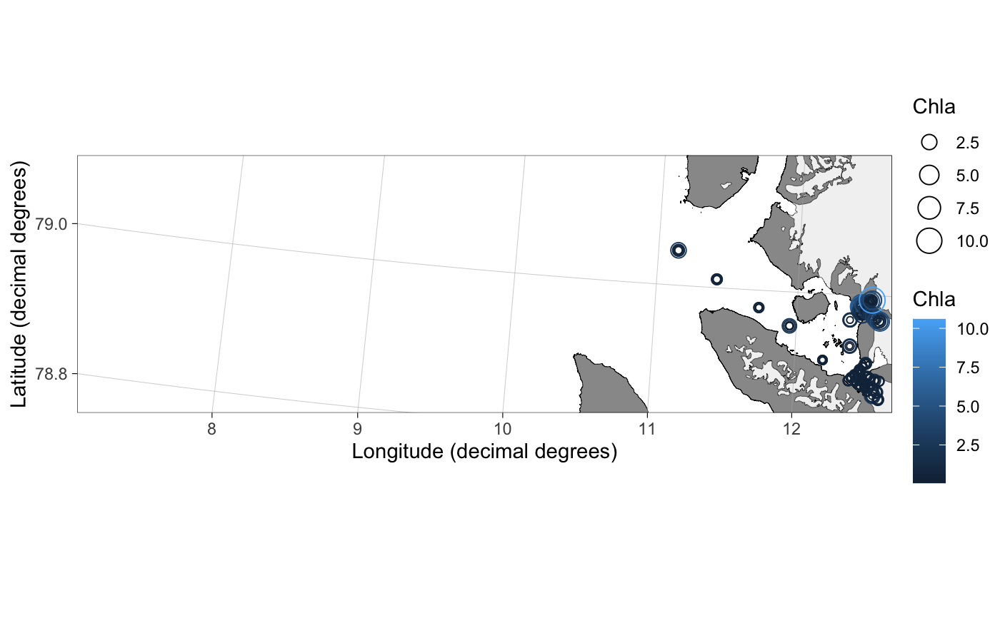
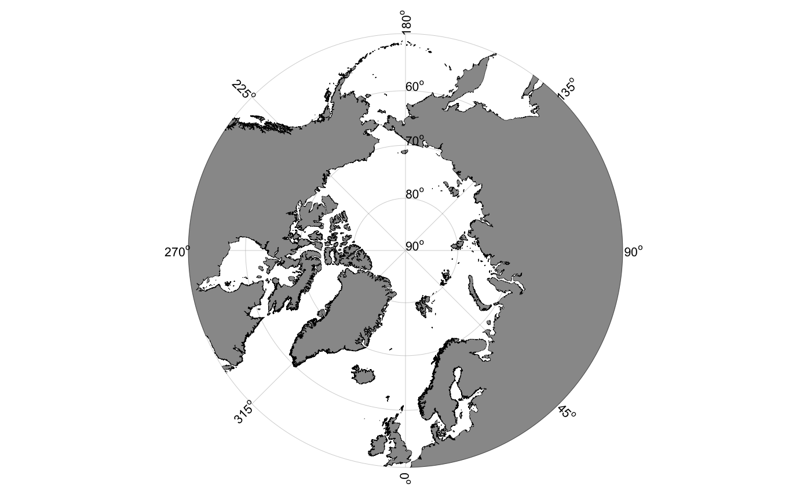

Create a ggplot2 basemap for plotting variables
Creates a ggplot2 basemap for further plotting of variables.
basemap(type = "kongsfjorden", limits = NULL, round.lat = FALSE, n.lat.grid = 3, lat.interval = 10, round.lon = FALSE, n.lon.grid = 3, lon.interval = 45, keep.glaciers = TRUE, bathymetry = FALSE, land.col = "#eeeac4", size.land = 0.1, border.col.land = "black", gla.col = "grey95", size.glacier = 0.1, border.col.glacier = "black", grid.col = "grey70", size.grid = 0.1, label.print = TRUE, label.offset = 1.05, label.font = 8)
Arguments
| type | Type of map area. Options: "svalbard", "mosj", "kongsfjorden", "kongsfjordbotn", "kronebreen", "barentssea", "arctic50" or "arctic60". See details. |
|---|---|
| limits | Map limits. A numeric vector of length 4 where first element defines the minimum longitude, second element the maximum longitude, third element the minimum latitude and fourth element the maximum latitude of the bounding box. The coordinates have to be given as decimal degrees for Svalbard and Barents Sea maps and as UTM coordinates for pan-Arctic maps. See "Examples", |
| round.lat | Numeric value specifying the level of rounding to be used to plot latitude grid lines. Overrides |
| n.lat.grid | Numeric value specifying the number of latitude grid lines. Alternatively use |
| lat.interval | Numeric value specifying the interval of latitude grids for polar stereographic maps ( |
| round.lon | Numeric value specifying the level of rounding to be used to plot longitude grid lines. Overrides |
| n.lon.grid | Numeric value specifying the number of longitude grid lines. Alternatively use |
| lon.interval | Numeric value specifying the interval of longitude grids for polar stereographic maps ( |
| keep.glaciers | Logical indicating whether glaciers should be kept for the Svalbard maps. Setting this to |
| bathymetry | Logical indicating whether bathymetry should be added to the map. Relatively slow. Defaults to |
| land.col | Character code specifying the color of land. |
| size.land | Numeric value specifying the width of the border line for land shapes. See details for explanation about line widths. |
| border.col.land | Character code specifying the color of the border line for land shapes. |
| gla.col | Character code specifying the color of glaciers. |
| size.glacier | Numeric value specifying the width of the border line for glacier shapes. |
| border.col.glacier | Character code specifying the color of the border line for glacier shapes. |
| grid.col | Character code specifying the color of grid lines. Use |
| size.grid | Numeric value specifying the width of the grid lines. |
| label.print | Logical indicating whether labels should be printed for polar stereographic maps. |
| label.offset | Offset between the round polar stereographic maps and longitude labels. Optimized for a pdf output. Use 1.1 for larger size figures. |
| label.font | Numeric value specifying the font size for labels in polar stereographic maps. Note that this value defines the actual font size in points, not the |
Source
Svalbard shape files originate from the Norwegian Polar Institute (http://geodata.npolar.no/). Barents Sea and polar stereographic maps are from http://www.naturalearthdata.com. They use the ne_10m_land and ne_50m_land (v 4.0.0) datasets, respectively. Bathymetry polygons are generalized from IBCAO v3.0 500m RR grid https://www.ngdc.noaa.gov/mgg/bathymetry/arctic/ibcaoversion3.html.
Value
Returns a ggplot2 map, which can be assigned to an object and modified as any ggplot object.
Details
The function uses ggplot2 and shapefiles to plot maps of Svalbard and other polar regions. The Svalbard shapefiles are detailed and glaciers varyinly up-to-date (2017 for Kongsfjorden; mostly 2015 for the rest, but not systematically checked) detailed The map type is defined using the type argument and map limits can be controlled with the limits argument. Currently implemented map types:
"svalbard". Detailed 1:250 000 map of Svalbard land and glaciers. This option is slow (approx. 25 seconds) due to the large file size.
"mosj" shows Kongsfjoden and Fram Strait as sampled during Norwegian Polar Institute's MOSJ campaigns. Some glaciers can be older than 2015.
"kongsfjorden" shows Kongsfjorden and parts of Prins Karls Forland. Glaciers are from 2015 to 2017. This map uses a subset of the Svalbard shape files and is faster to plot due to smaller file size.
"kongsfjordbotn" shows Kongsvegen, Kronebreen, Kongsbreen and Conwaybreen. Glaciers are from July 2017. This map uses a subset of the Svalbard shape files and is faster to plot due to a smaller file size.
"kronebreen" shows mostly Kronebreen and Kongsvegen. Glacier fronts are from July 2017. This map uses a subset of the Svalbard shape files and is faster to plot due to a smaller file size.
"barentssea". A 1:10 000 000 map of the Barents Sea.
"arctic50". A polar stereographic map of the Arctic with a limit at 50 degrees North.
"arctic60". A polar stereographic map of the Arctic with a limit at 60 degrees North.
Svalbard and Barents Sea maps use the "+init=epsg:32633" UTM projection. The polar stereographic maps use "+proj=stere +lat_0=90 +lat_ts=71 +lon_0=0 +k=1 +x_0=0 +y_0=0 +datum=WGS84 +units=m +no_defs +ellps=WGS84 +towgs84=0,0,0" projection.
Line width (size) aesthatics in ggplot2 generetes approximately 2.13 wider lines measured in pt than the given values. If you want a specific line width in pt, multiply it by 1/2.13.
See also
ggplot2 theme_map
coastlineWorldMedium from the oce package for plotting maps in maps in base graphics using the ne_10m_land dataset.
Examples
basemap() ## Plots Kongsfjorden## Maps work as normal ggplot2 objects: data(chlorophyll) p <- basemap("mosj") p + geom_point(data = chlorophyll, aes(x = lon.utm, y = lat.utm, size = Chla, color = Chla), shape = 1)## limitting maps can be done using the limits argument: basemap("kongsfjordbotn", limits = c(12.2,12.65,78.95,79.00))## Svalbard map. Warning: this is SLOW basemap("svalbard")## grid.col = NA removes grid lines basemap("svalbard", grid.col = NA, limits = c(10, 28, 79.5, 83))## Use round.lat and n.lon.grid arguments ## to control grid lines basemap("svalbard", limits = c(3,24,78.5,82), round.lat = 1, n.lon.grid = 4)## Barents Sea basemap("barentssea")## Barents Sea map also prints mainland Norway, ## but the projection is not optimal. basemap("barentssea", limits = c(12, 24, 68, 71))## Polar stereographic pan-Arctic maps basemap("arctic50")#>## To find UTM coordinates to limit a pan-Arctic map: basemap("arctic60") + theme_bw()#>basemap("arctic60", limits = c(250000, -2500000, 2000000, -250000))#>## Bathymetry can be added using the bathymetry argument basemap("arctic50", bathymetry = TRUE)#>## Current bathymetry shapefiles are not detailed ## enough for Svalbard fjords basemap("kongsfjorden", bathymetry = TRUE)